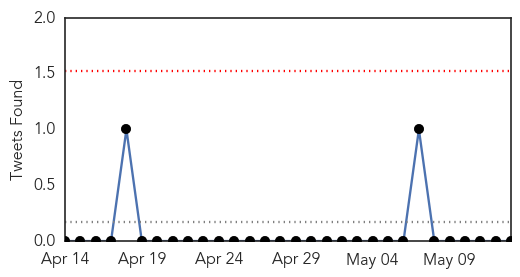
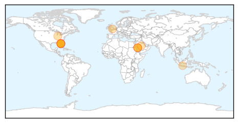
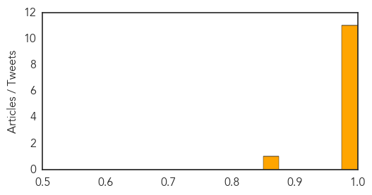
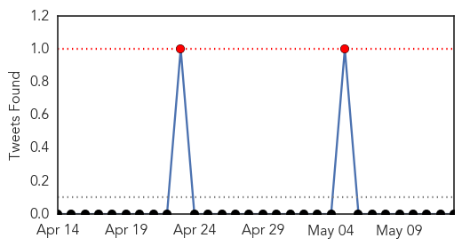
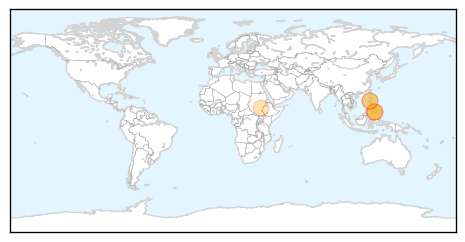
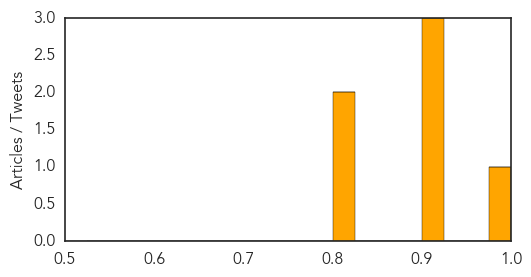

Swine Flu
30-Day Web Trend
1 alerts, 0 warnings

30-Day Twitter Trend
0 alerts, 0 warnings

Article Locations
Article Confidences
Top Articles:
- 1.000
- Two U.S. health workers ill after MERS exposure; World Health body meets in Geneva
- 1.000
- Two U.S. health workers ill after MERS exposure; World Health Organization meets
- 1.000
- UPDATE 4-Two U.S. health workers ill after MERS exposure; World Health body meets in Geneva
- 1.000
- UPDATE 2-Two U.S. health workers ill after MERS exposure; World Health Organization meets
- 1.000
- Two U.S. health workers ill after MERS exposure; World Health body meets in Geneva
- 1.000
- Two US Health Workers Ill After MERS Exposure; World Health Body Meets In Geneva
- 1.000
- 2 Florida Health Workers Ill After Exposure To MERS Patient
- 1.000
- Two U.S. health workers ill after MERS exposure; World Health Organization meets
- 1.000
- Two US health workers ill after MERS exposure; World Health Organization meets
- 1.000
- UPDATE 4-Two U.S. health workers ill after MERS exposure; World Health body meets in Geneva
- 0.999
- Sick flyers must take MERS test
- 0.869
- Adi Soemarmo airport ups MERS detection efforts
Top Tweets:
-
No tweets found for May 13, 2014
Cholera
30-Day Web Trend
0 alerts, 0 warnings

30-Day Twitter Trend
1 alerts, 0 warnings

Article Locations
Article Confidences
Top Articles:
- 0.991
- (UPDATE) 7 dead in cholera outbreak in Cotabato
- 0.919
- Suspected cholera outbreak kills 12, downs 200 in North Cotabato
- 0.919
- Suspected cholera outbreak kills 12, downs 200 in North Cotabato
- 0.908
- IOM Conducts First Mass Oral Cholera Vaccination Campaign in South Sudan
- 0.808
- Cholera kills 5, downs 103 in N. Cotabato town
- 0.802
- Nation, News, The Philippine Star
Top Tweets:
- 0.637
- RT: IOM Conducts 1st Oral Cholera Vx Campaign in S. Sudan http://t.co/93AhzeXKun More orgs w more cholera vx experience benefits